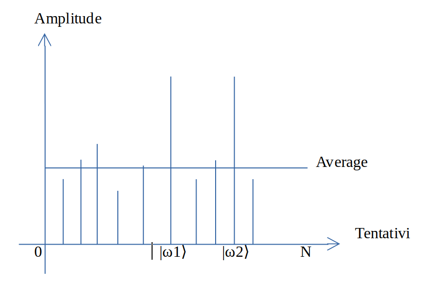

Con questo algoritmo si vuole cercare una variabile ω all'interno di un non ordinato database.
Nel computer classici sono necessari in media N/2 tentativi dove N è uguale a 2
n elementi.
Con questo algoritmo in media √N tentativi.
Anche in questo algoritmo dobbiamo costruire una black-box o Oracle function che
controlla lo stato |x⟩ e che quando trova lo stato cercato esegue su di esso una fase negativa.
Come indicato dalla seguente rappresentazione matematica
Uω|x⟩ = {|x⟩ if x ≠ ω −|x⟩ if x=ω}
La Oracle Uω|x⟩ = ( -1)
f(x) |x⟩ è rappresentata da una matrice diagonale dove quando si trova ω 1 diventa -1
come nell'immagine seguente dove Uω|x⟩ è uguale a:
Nello schema possiamo notare il procediamneto a partire dall'applicazione del gate H
per creare la superposition su tutti i qubits.
Possiamo vedere che le fasi sono contraddistinte con colori diversi
ma l'Oracle U ed il cicloK compongono insieme il cicloT.
Per trovare ω dobbiamo eseguire n volte il cicloT.
Uf con f = {0,1}n con output {0,1} e
f(x) = { 1 if x = ω 0 if x != ω } mentre
la
Uf1 ha la f1(x) = { 0 if x = 000...00 1 if x != 000...00 }
Per un risultato migliore il cicloT deve essere ripetuto nr volte secondo la seguente formula :
nr = int(np.floor(np.pi/4*np.sqrt(2**n/len(ec))))
dove n = numero qubits e ec = numero elementi da cercare ω.
Alla base di questo algoritmo c'è l'Amplitude amplification che è una procedura che amplifica l'ampiezza
dell'elemento che si sta analizzando e che riduce l'ampiezza degli altri elementi, in modo che la misurazione dello stato finale restituisca
l'elemento cercato con elevata probabilità.
L'interpretazione geometrica si basa su due riflessioni, che generano una rotazione su un piano bidimensionale.
Gli unici due stati da considerare sono |ω⟩ e la uniform superposition |s⟩.
Questi due vettori si estendono su un piano bidimensionale nello spazio vettoriale ma non sono completamente perpendicolari
per cui si introduce uno stato aggiuntivo |s'⟩ perpendicolare a |ω⟩.
La procedura parte con la creazione della uniform superposition poi si applica la Oracle T
e successivamente per completare la rotazione si applica il cicloK.
Il cicloT, composto dall'Oracle U e cicloK, viene eseguito diverse volte
e all'incirca √N.
Nei grafici sottostanti possiamo vedere nel grafico a sx le diverse fasi della amplitude amplification mentre a dx
per ogni elemento l'amplitude ottenuta e si può verificare che quando si trova |ω⟩ si ha l'amplitude maggiore.
Nel caso ci siano diverse soluzioni indicate con M il cicloT si ripeterà √N/M
volte.
Vediamo sotto la amplitude nel caso di ricerca di 2 elementi.

Passiamo ora a vedere come costruire in Python un algoritmo con una simulazione della ricerca di 3
elementi su di un database di elementi creato con 6 e 7 qubits.
from qiskit.quantum_info import Operator
from qiskit import QuantumCircuit
from qiskit import Aer, execute
from qiskit.visualization import plot_histogram
import numpy as np
import pylatexenc
def OracleU(n, elementi, name = 'Oracle_U'):
#creo quantum circuit di n qubits e modifico indice elemento cercato nella identity matrix
qc = QuantumCircuit(n, name=name)
Identitymatrix = np.identity(2**n)
for elemento in elementi:
Identitymatrix[elemento, elemento] = -1
#converto Identitymatrix in un operator e lo inserisco nel quantum circuit
qc.unitary(Operator(Identitymatrix), range(n), label='mecbar')
return qc
Qui vediamo la Identitymatrix che poi viene trasformata in operator e inserita come unitary nel
circuito.
[[-1. 0. 0. ... 0. 0. 0.]
[ 0. 1. 0. ... 0. 0. 0.]
[ 0. 0. 1. ... 0. 0. 0.]
...
[ 0. 0. 0. ... 1. 0. 0.]
[ 0. 0. 0. ... 0. 1. 0.]
[ 0. 0. 0. ... 0. 0. 1.]]
def cicloK(n):
# create a quantum circuit on n qubits
qc = QuantumCircuit(n, name='cicloK')
# inserisco hadamard gates su tutti i qubits
qc.h(range(n))
# inserisco OracleU per elemento 0 su tutti i qubits
qc.append(OracleU(n,[0]),range(n))
qc.h(range(n))
return qc
def creoCircuito(n, nr, elementiSearch):
# Crea quantum circuit di n qubits
qc = QuantumCircuit(n, n)
# creo uniform superposition applicando Hadamard gates su tutti i qubits
qc.h(range(n))
# inserisco nel circuito i cicloT necessari
for _ in range(nr):
qc.append(OracleU(n, elementiSearch), range(n))
qc.append(cicloK(n), range(n))
# measure all qubits
qc.measure(range(n), range(n))
return qc
n = 6
# cerco numero random entro range da numero qubits
ω1 = np.random.randint(2**n)
ω2 = np.random.randint(2**n)
ω3 = np.random.randint(2**n)
database = range(2**n)
print(ω1,ω2,ω3, database)
cerca = [ω1,ω2,ω3]
# Calcola numero delle rotazioni - esecuzione cicloT
nr = int(np.floor(np.pi/4*np.sqrt(2**n/len(cerca))))
qc = creoCircuito(n,nr, cerca)
print('numero iterazioni cicloT', nr)
qc.draw(output='mpl')
# 3 Numerri da cercare e range del database su cui cercare enumero iterazioni eseguite del cicloT
60 16 28 range(0, 64)
numero iterazioni cicloT 3
# grafico del circuito creato
# esecuzione della simulazione del circuito
simulator = Aer.get_backend('qasm_simulator')
counts = execute(qc, backend=simulator, shots=1000).result().get_counts(qc)
plot_histogram(counts)
# risultato della simulazione
Il risultato ottenuto è 010000 cioè 16 in decimale, 011100 cioè 28 e 111100 cioè 60.
n = 7
# cerco numero random entro range da numero qubits
ω1 = np.random.randint(2**n)
ω2 = np.random.randint(2**n)
ω3 = np.random.randint(2**n)
database = range(2**n)
print(ω1,ω2,ω3, database)
cerca = [ω1,ω2,ω3]
# Calcola numero delle rotazioni - esecuzione cicloT
nr = int(np.floor(np.pi/4*np.sqrt(2**n/len(cerca))))
qc = creoCircuito(n,nr, cerca)
print('numero iterazioni cicloT', nr)
qc.draw(output='mpl')
# 3 Numerri da cercare e range del database su cui cercare enumero iterazioni eseguite del cicloT
115 106 41 range(0, 128)
numero iterazioni cicloT 5
# grafico del circuito creato
# esecuzione della simulazione del circuito
simulator = Aer.get_backend('qasm_simulator')
counts = execute(qc, backend=simulator, shots=1000).result().get_counts(qc)
plot_histogram(counts)
# risultato della simulazione
Il risultato ottenuto è 0101001 cioè 41, 1101010 cioè 106 e 1110011 cioè 115 in decimale.